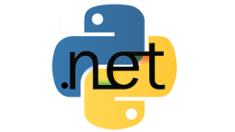

 Python for .NET é um software que permite que programadores escrevam scripts Python usando objetos e bibliotecas do framework .NET. Não é uma implementação de Python sobre .NET, como o IronPython, mas sim um software que integra Python e .NET. A vantagem de Python for .NET é que você pode usar bibliotecas e módulos Python inteiros (como TkInter ou PyGame) e ao mesmo tempo usar todas as funcionalidades e bibliotecas do .NET, no mesmo script.
O desenvolvimento do Python for .NET está sendo feito no repositório no GitHub. Você deve baixar o repositório e compilar no VisualStudio ou MonoDevelop. Mas, eu já compilei e disponibilizei, então se você está com pressa, você pode baixar os seguintes arquivos e colocá-los em uma pasta no seu computador:
Nessa pasta no repositório da biblioteca Spartacus no GitHub, você encontra todos esses arquivos e também os scripts de exemplo desse artigo.
Python puro: raw_input e print
No Python, a entrada de dados pelo console é feita através da função raw_input. Então, cole o conteúdo abaixo em um arquivo chamado rawinput.py:
v_nome = raw_input('Digite o seu nome?\n')
print 'Ola, %s.' % v_nomeVocê poderá executá-lo no Python da seguinte maneira:
python rawinput.pyAgora tente executar com o nPython, assim:
mono nPython.exe rawinput.pyVocê deve ter notado duas coisas:
- 1) É necessário usar o mono para executar o nPython, ou Python for .NET. Isso porque nPython.exe é um programa escrito em C#;
- 2) O mesmo script funciona da mesma forma tanto com Python quanto com nPython. Isso porque o nPython utiliza a libpython para executar os códigos em Python puro, assim como o interpretador Python.
Python for .NET: Console.ReadLine e Console.WriteLine
Agora vamos de fato escrever um script em Python que utiliza classes e métodos do .NET. Note que esse script não funcionará usando o interpretador python convencional, apenas nPython. Cole o conteúdo abaixo em um arquivo chamado console.py:
import clr
from System import Console
Console.Write("Digite o seu nome: ")
v_nome = Console.ReadLine()
Console.WriteLine("Ola, " + v_nome + ".")Para rodar:
mono nPython.exe console.pyPython puro: array
Vamos fazer um teste com vetores. Copie e cole o conteúdo abaixo e salve em um arquivo chamado array.py:
v_amigos = ['john', 'pat', 'gary', 'michael']
for a in v_amigos:
print "Esse eh meu amigo {0}".format(a)Você pode rodar tanto no python quanto no nPython, porque esse script contém apenas Python puro.
Python for .NET: List<T>
Agora, ao invés de array de Python, vamos usar o List<T> do .NET. Copie o conteúdo abaixo e salve em um arquivo chamado list.py:
import clr
import System
from System import Console
v_list = System.Collections.Generic.List[System.String]()
v_list.Add("john")
v_list.Add("pat")
v_list.Add("gary")
v_list.Add("michael")
for a in v_list:
print "Esse eh meu amigo " + aNote que, propositalmente, eu usei print ao invés de Console.WriteLine para escrever. Ora, print é muito mais prático do que Console.WriteLine. Essa é a beleza do Python for .NET: poder combinar a praticidade do Python com o poder do .NET.
Spartacus
Agora um teste que, pra mim, é o mais importante de todos: poder utilizar a biblioteca Spartacus no Python. Todos sabem que a biblioteca Spartacus é escrita em C# puro, e que possui um número gigante de funcionalidades. Por exemplo, com Spartacus é muito fácil acessar diversos bancos de dados. Já no Python, seria necessário estudar os drivers de conexão, conforme a tecnologia de banco de dados que eu esteja querendo acessar, o que seria muito trabalhoso. Eu já tive todo esse trabalho e já tratei todas as possibilidades, erros e particularidades na Spartacus. Portanto, poder utilizar Spartacus é fundamental pra mim.
Então, vamos baixar o arquivo basecadastro.db. Esse é um banco de dados em SQLite. Não esqueça de baixar também a Spartacus.dll. Vamos então escrever um script python chamado bancodedados.py com o seguinte conteúdo:
import clr
clr.AddReference("System.Data")
clr.AddReference("System.Xml")
clr.AddReference("Spartacus")
import Spartacus
try:
v_database = Spartacus.Database.Sqlite("basecadastro.db")
v_table = v_database.Query("select * from paises", "PAISES")
for r in v_table.Rows:
print("{0} {1}".format(r["pais_st_codigo"], r["pais_st_nome"]))
except Spartacus.Database.Exception as exc:
print("ERRO: {0}".format(exc.v_message))
O código é enxuto e elegante... Será que funciona? Para rodar:
mono nPython.exe bancodedados.pyFunciona!! Agora sim eu estou contente. Até hoje eu só tinha usado Spartacus no C#. Ver uma biblioteca tão complexa rodando no Python, sem perda de desempenho, é muito bacana. Com isso, é possível escrever scripts para automatizar muitas coisas no dia a dia. Espero que o Python for .NET tenha sido útil pra você também!